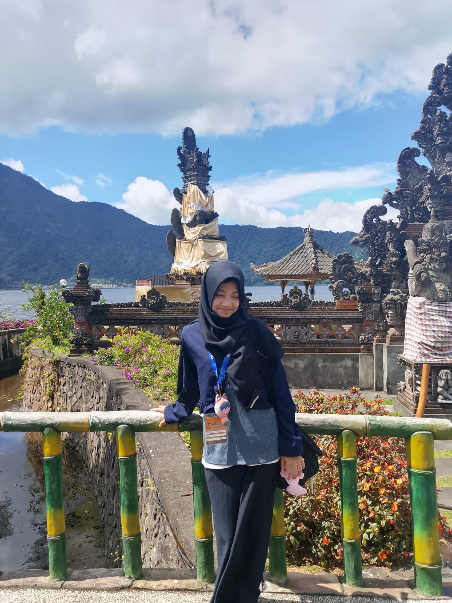
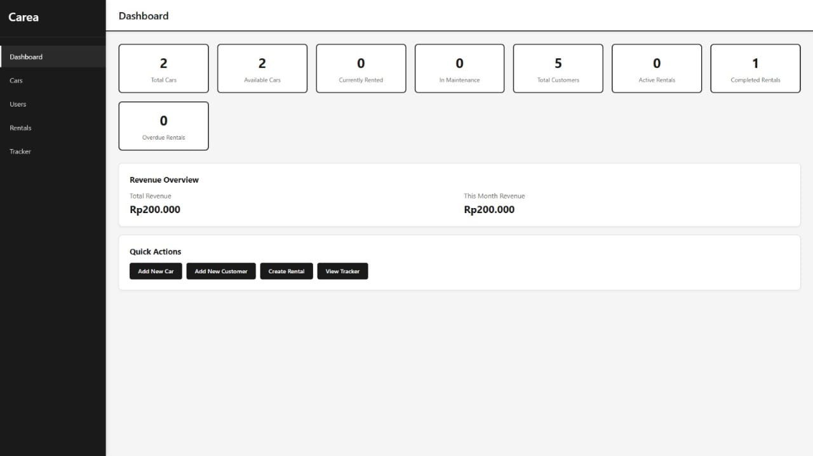
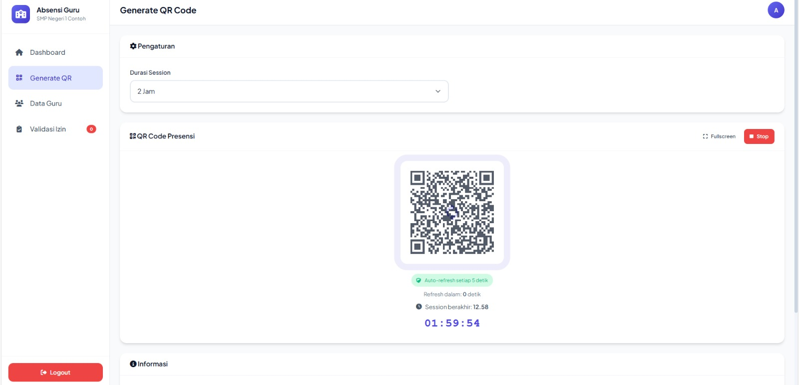
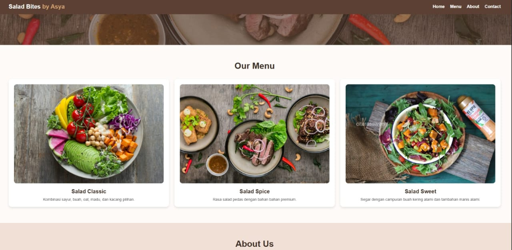
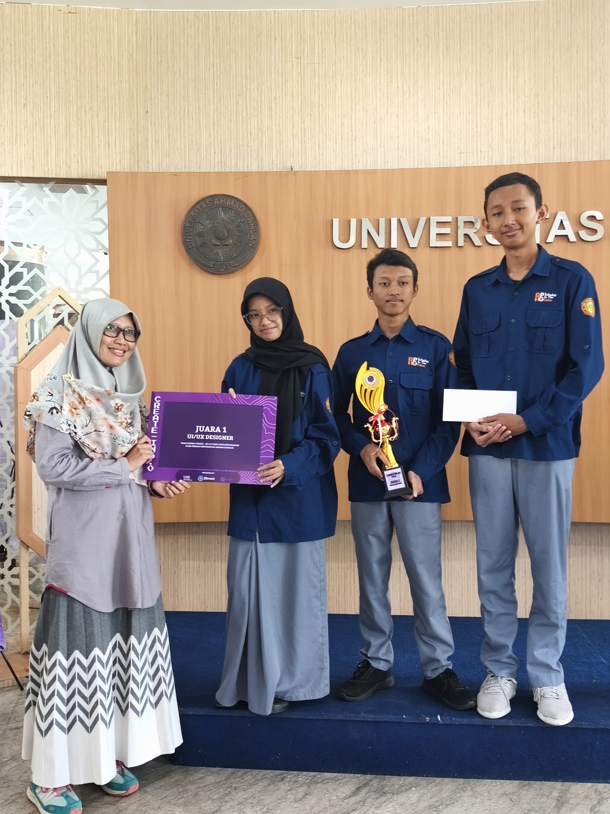
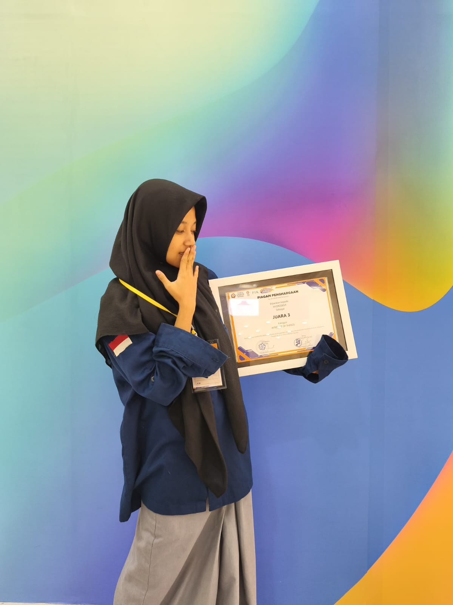
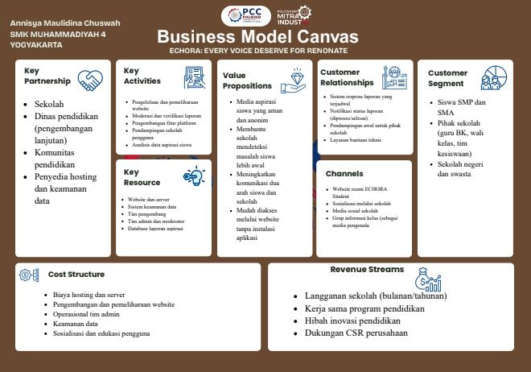
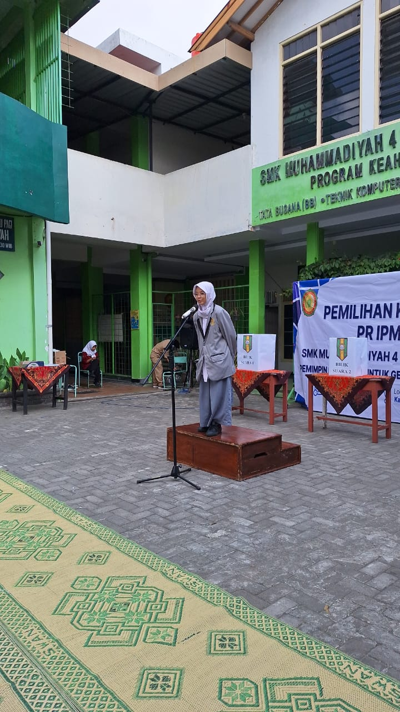
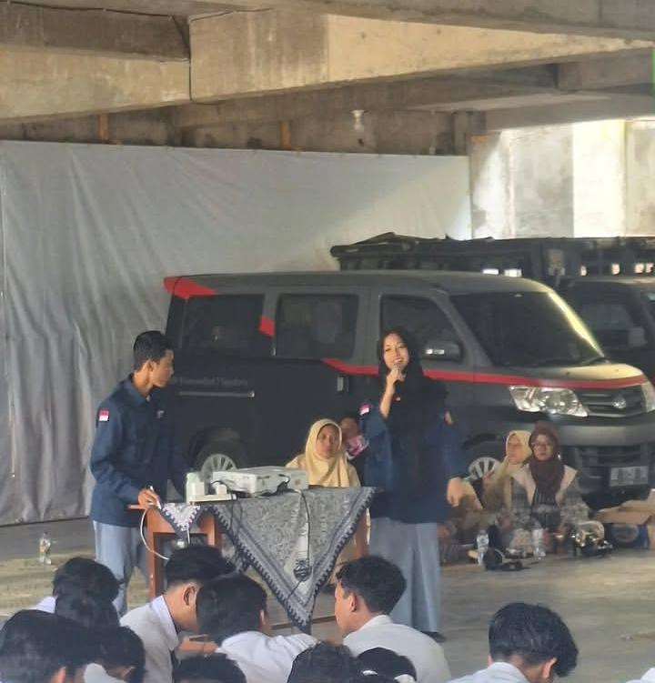
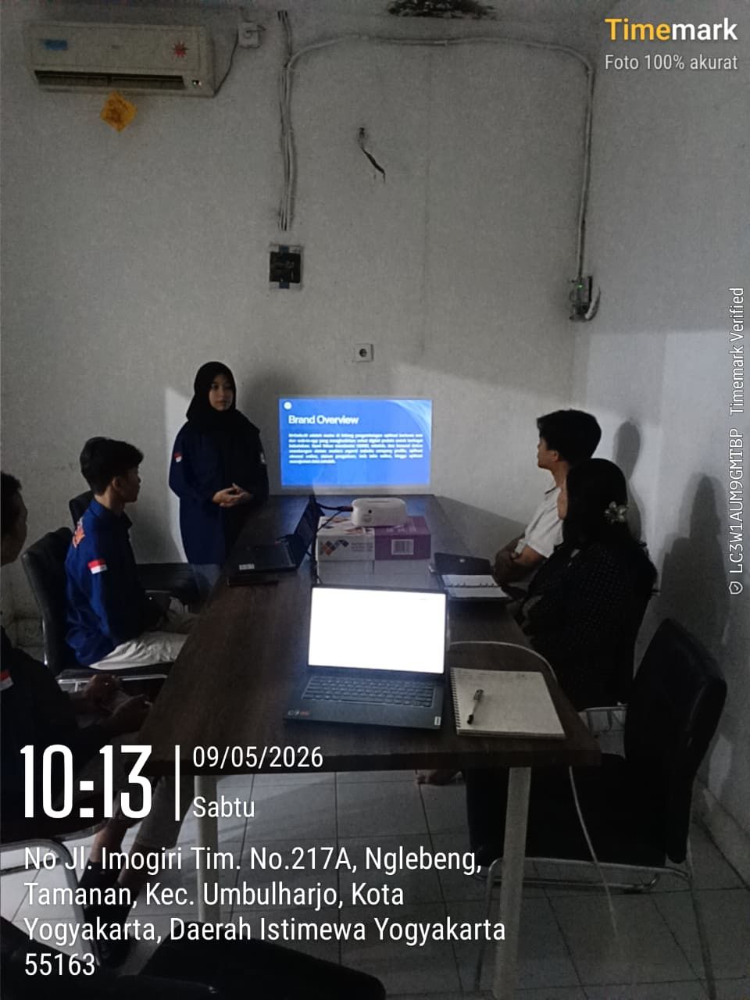

Siswi SMK jurusan Rekayasa Perangkat Lunak dengan pengalaman di pengembangan web, IoT, dan UI/UX design, dibuktikan lewat berbagai prestasi tingkat nasional. Aktif sebagai pemateri pelatihan teknologi dan pengurus organisasi sekolah, dengan kemampuan kerja tim dan komunikasi yang baik.

Sedikit informasi tentang latar belakang dan identitas saya.
Siswi SMK jurusan Rekayasa Perangkat Lunak dengan pengalaman di pengembangan web, IoT, dan UI/UX design, dibuktikan lewat berbagai prestasi tingkat nasional dan juara 1 kelas berturut. Cepat beradaptasi dan terbuka terhadap tantangan baru di bidang teknologi.
| Nama | Annisya Maulidina Chuswah |
|---|---|
| Kelas | 12 RPL |
| Domisili | Kasihan, Bantul, Yogyakarta |
| Pendidikan | SMK Muhammadiyah 4 Yogyakarta |
| Jurusan | Rekayasa Perangkat Lunak (2024 — Sekarang) |
| GitHub | asayasa02 (Asya MC) |
Kumpulan bahasa pemrograman, tools, dan kemampuan lain yang saya pelajari dan gunakan.
Bahasa yang saya gunakan untuk membangun proyek.
Framework yang membantu saya bekerja lebih cepat.
Sistem basis data yang pernah saya pakai.
Perkakas & perangkat pendukung dalam proses kerja saya.
Kemampuan merancang tampilan & pengalaman pengguna.
Kemampuan pendukung di luar teknis.
Proyek web yang saya bangun langsung, dan rancangan UI/UX di Figma.

Aplikasi CRUD & login untuk rental mobil, dengan dashboard kelola mobil, pelanggan, dan status rental — dibangun pakai CodeIgniter 4 dan MySQL.
Lihat di GitHub →
Sistem presensi guru berbasis scan QR Code dengan auto-refresh, durasi sesi, validasi izin, dan dashboard data guru — dibangun pakai CodeIgniter 4.
Lihat di GitHub →
Landing page statis untuk bisnis kuliner salad sehat, menampilkan menu, tentang toko, dan kontak.
Lihat di GitHub →Rancangan UI/UX aplikasi check-in mood & kesehatan mental harian.
Buka di Figma →Beberapa kompetisi, penghargaan, dan pengalaman organisasi yang pernah saya ikuti.

Createin 2026, Himpunan Mahasiswa Sistem Informasi, Universitas Ahmad Dahlan.

Exhibition AMICTA, Universitas AMIKOM.

Politeknik Mitra Industri.

SMK Muhammadiyah 4 Yogyakarta.
SMK Muhammadiyah 4 Yogyakarta.

Pemateri Scratch (SMP Muhammadiyah 7) dan Pengenalan Website (SMP Muhammadiyah 10) Yogyakarta.

Mengembangkan website, mengoordinasikan tim, serta presentasi proyek & wawancara dengan calon klien.
Ada pertanyaan atau ingin berkolaborasi? Hubungi saya lewat salah satu kanal berikut.